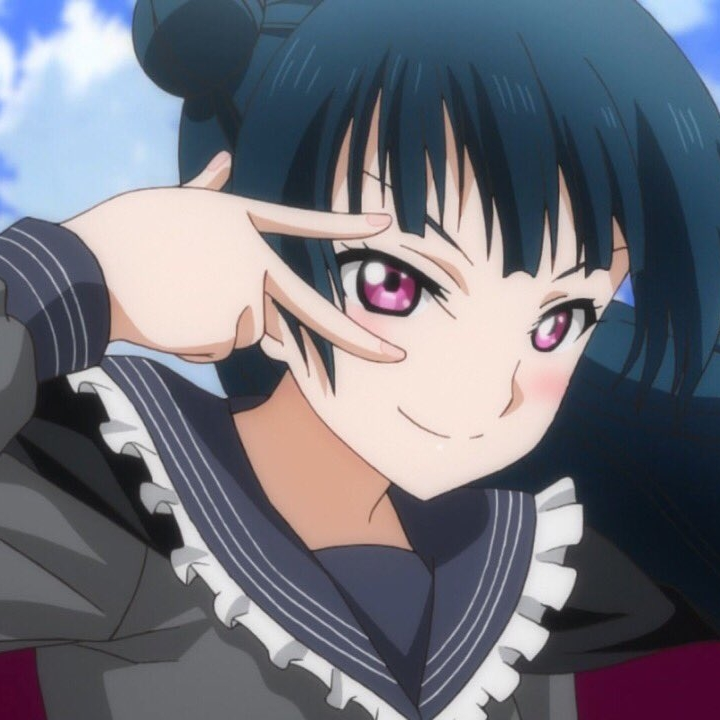
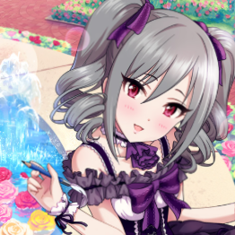
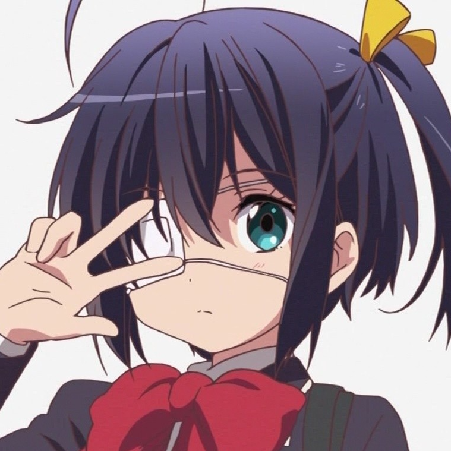
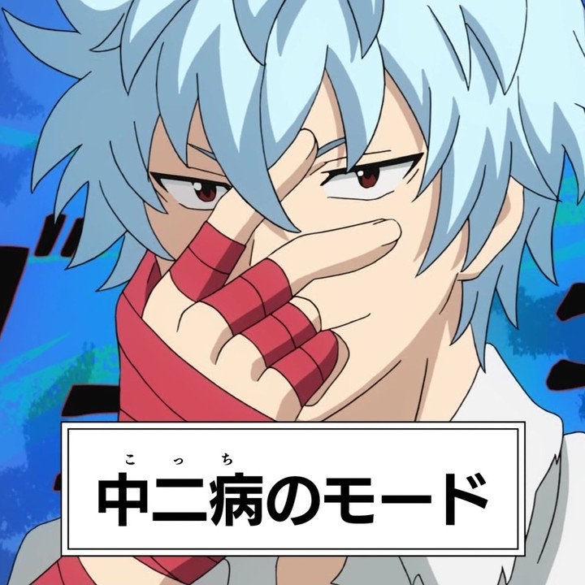
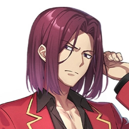
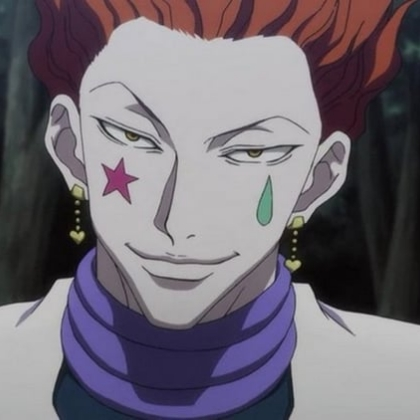
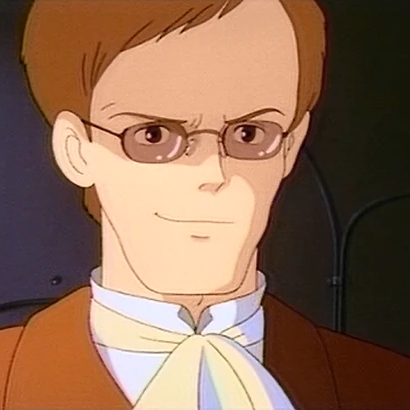
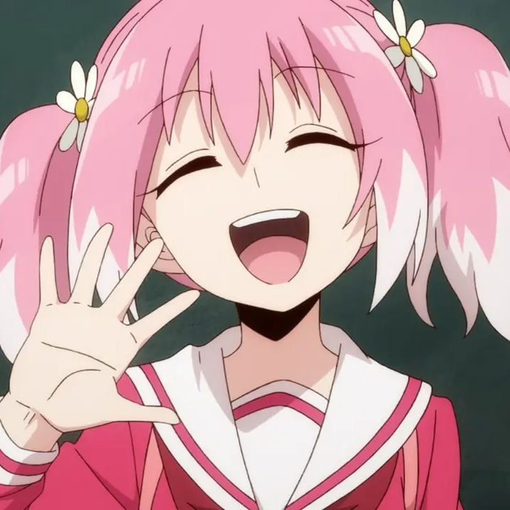

診断結果
あなたは中二病ではありません。
中二病の人への対応アドバイス：
「そういう考え方も面白いね」と受け入れる態度を取ることで、彼らが安心して自分を表現できます。
共通の趣味や話題があれば、そこから自然にコミュニケーションを深めると良いでしょう。
自分の常識＝他人の常識ではないことを念頭に置き、人の価値観を否定しないようにしましょう。
自分が巻き込まれたくない場合は適度な距離を保つことも大切です。
中二病に限らず、当人的には真剣に悩んでいることを、そういう時期だからと茶化すのは人を傷つけます。子供の頃に消化させ、文字通り黒歴史にしないと変わった憧れとなって残ることもあります。
例えば、「嫉妬ですか醜いですね」と言った子どもに「人様にそんな失礼なことを言うんじゃない」「ろくな経験も積んでいない立場で滅多なことを言うな」ときちんと諭すのではなく、中二病だと茶化し、そういう年ごろの一言でまとめるような面白がり方をしたら歪むこともあります。中二病は精神の成長の一過程であり、真剣に向き合わずに面白がって消化するのは当人のためにはなりません。問題ない範囲なら静かに見守り、問題があるようなら真摯に教えてあげましょう。
邪気眼系中二病のキャラクター
-
 中二病的な言動が多い紅魔族の少女で、特に 「爆裂魔法こそ至高！」 というこだわりが強い。詠唱をカッコよく決めるが、実際は 1回しか撃てず戦闘不能になる という残念な部分もある。紅魔族全体が中二病的な文化を持っており、めぐみんはその代表格。
中二病的な言動が多い紅魔族の少女で、特に 「爆裂魔法こそ至高！」 というこだわりが強い。詠唱をカッコよく決めるが、実際は 1回しか撃てず戦闘不能になる という残念な部分もある。紅魔族全体が中二病的な文化を持っており、めぐみんはその代表格。
-
 「超高校級の飼育委員」として動物に最大限の愛情を注いでいるが、重度の中二病。手にしているのは実はハムスターだが、「破壊神暗黒四天王」と本人は呼び、いつも連れ歩いている。いずれ世界のすべてを支配する宿命であると本気で信じている。
「超高校級の飼育委員」として動物に最大限の愛情を注いでいるが、重度の中二病。手にしているのは実はハムスターだが、「破壊神暗黒四天王」と本人は呼び、いつも連れ歩いている。いずれ世界のすべてを支配する宿命であると本気で信じている。
-  元々は「ヨハネ」という名の天使だったのだが、あまりに美しい容姿を持っているため神に嫉妬され運気を奪われたがために堕天使となり、人間界に降りてきたという自己設定を持つ。この中二病設定は自身の名前のコンプレックスと不幸体質へのカウンターから来るものであり、理想の自分を作ることでポジティブに日々を送っている。
- 斉木楠雄のΨ難第一話
-  14歳のアイドル候補生で、重度の中二病。台詞の多くが過剰に比喩的で難解なので、基本的には何を言っているのかわからないことが多い。しかし、台詞の後に同時通訳がなされており、そのおかげで台詞の意味を理解できるようになっている。 「我が名は神崎蘭子！漆黒の堕天使にて、光輝なる集いの一翼！今、禁断の扉を開き、天空への階段に足を踏み入れん！(神崎蘭子です！ルミナスでのアイドル活動頑張ります♪)」
-  聖なる心によって闇の力を卸す、邪王真眼の使い手という設定を持つ高校一年生。呪文は「爆ぜろリアル！弾けろシナプス！バニッシュメント・ディス・ワールド！」。かつてはこのような性格でなく、自分の気持ちを表に出さず周りの意見に従う内気な女の子だった。しかし、近所で中二病ごっこをしている主人公・富樫勇太に遭遇し、自分の気持ちを押し殺している自分よりよっぽど素直でかっこいいと思うようになった。
めぐみん（この素晴らしい世界に祝福を！）
田中眼蛇夢（スーパーダンガンロンパ2）
津島善子（ラブライブサンシャイン）
海藤瞬（斉木楠雄のΨ難）
 「漆黒の翼」または「スクライドセイヴァー」を自称し、世界を守る使命を背負っているらしい。中二病設定は高校デビューの挑戦の結果であり、主人公・斉木も高校デビューに失敗した同類だと思い込みつきまとっている。神崎蘭子（アイドルマスターシンデレラガールズ）
小鳥遊六花（中二病でも恋がしたい！）
DQN系中二病が憧れるキャラクター
-  クラスを信頼ではなく、恐怖で支配する独裁者。その卑劣漢ぶりゆえに、周りから異質な存在として見られている。中学時代は不良として有名人で、高校入学後も暴力に躊躇のないその姿勢は変わっていない。
- 十二大戦第一話
-  天才的な戦闘センスの持ち主で、バンジーガムとドッキリテクスチャーといういたってシンプルな念能力を使い、戦闘を楽しんでいる。戦闘狂ながらも頭の回転も非常に早く、機転が効く。狩る対象として、様々な人物を「玩具(オモチャ)」と捉えている。
-  ラピュタの力を自らの手中に収め、新たなラピュタ王として全世界に君臨することに強い野心を燃やす。ムスカは当初手荒な真似は控え紳士的な態度を見せたが、その本性は己の目的のためには手段を選ばず、平然と味方を裏切り、他人の命すらも平気で奪うなど極めて冷酷非情な性格である。
- 暗殺教室第一話
- ぼっち・ざ・ろっく！第一話
- 上京生活録イチジョウ第一話
- カイジ第一話
- 魔法少女サイト第一話
-  能力は「人の心を読むこと」。笑顔の絶えない明るい性格だが、空気の読めない言動が多い。一見すると明るく積極的な美少女に見えるが第一話にしてその印象はガラッと変わる。
- 無能なナナ第一話 しかし、彼女の境遇は上記三人よりさらに悲惨なものであり、サブカル系中二病と安易に呼ぶには重すぎるかもしれない。
- 迷宮ブラックカンパニー第一話